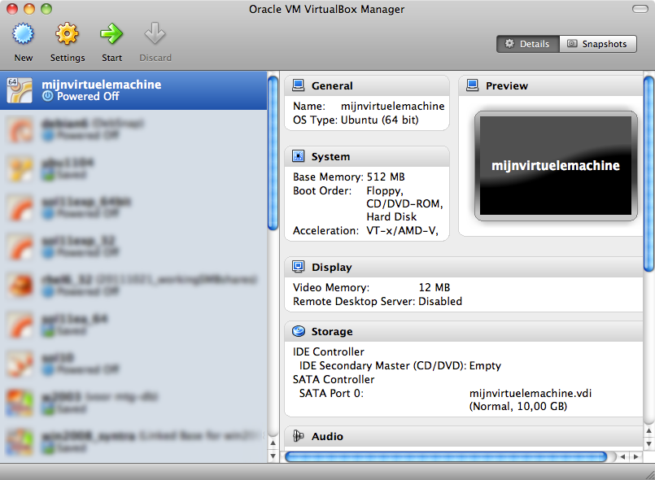
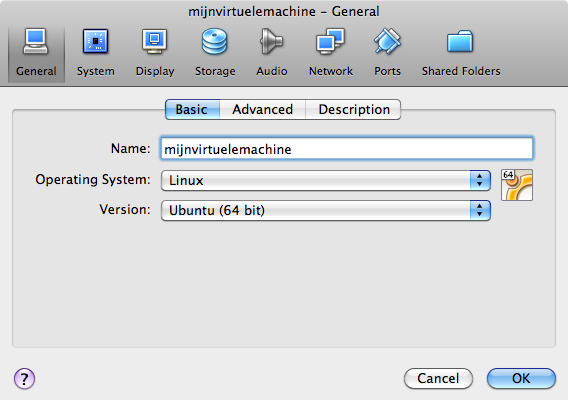

getting Linux at home
(Written by Paul Cobbaut, https://github.com/paulcobbaut/)
This chapter shows a Ubuntu install in Virtualbox. Consider it legacy and use CentOS7 or Debian8 instead (each have their own chapter now).
This book assumes you have access to a working Linux computer. Most companies have one or more Linux servers, if you have already logged on to it, then you \'re all set (skip this chapter and go to the next).
Another option is to insert a Ubuntu Linux CD in a computer with (or without) Microsoft Windows and follow the installation. Ubuntu will resize (or create) partitions and setup a menu at boot time to choose Windows or Linux.
If you do not have access to a Linux computer at the moment, and if you are unable or unsure about installing Linux on your computer, then this chapter proposes a third option: installing Linux in a virtual machine.
Installation in a virtual machine (provided by Virtualbox) is easy and
safe. Even when you make mistakes and crash everything on the virtual
Linux machine, then nothing on the real computer is touched.
This chapter gives easy steps and screenshots to get a working Ubuntu server in a Virtualbox virtual machine. The steps are very similar to installing Fedora or CentOS or even Debian, and if you like you can also use VMWare instead of Virtualbox.
download a Linux CD image
Start by downloading a Linux CD image (an .ISO file) from the
distribution of your choice from the Internet. Take care selecting the
correct cpu architecture of your computer; choose i386 if unsure.
Choosing the wrong cpu type (like x86_64 when you have an old Pentium)
will almost immediately fail to boot the CD.

download Virtualbox
Step two (when the .ISO file has finished downloading) is to download Virtualbox. If you are currently running Microsoft Windows, then download and install Virtualbox for Windows!

create a virtual machine
Now start Virtualbox. Contrary to the screenshot below, your left pane should be empty.
Click New to create a new virtual machine. We will walk together
through the wizard. The screenshots below are taken on Mac OSX; they
will be slightly different if you are running Microsoft Windows.
Name your virtual machine (and maybe select 32-bit or 64-bit).
Give the virtual machine some memory (512MB if you have 2GB or more, otherwise select 256MB).

Select to create a new disk (remember, this will be a virtual disk).

If you get the question below, choose vdi.

Choose dynamically allocated (fixed size is only useful in production
or on really old, slow hardware).
Choose between 10GB and 16GB as the disk size.

Click create to create the virtual disk.
Click create to create the virtual machine.
attach the CD image
Before we start the virtual computer, let us take a look at some
settings (click Settings).

Do not worry if your screen looks different, just find the button named
storage.

Remember the .ISO file you downloaded? Connect this .ISO file to this
virtual machine by clicking on the CD icon next to Empty.

Now click on the other CD icon and attach your ISO file to this virtual CD drive.
Verify that your download is accepted. If Virtualbox complains at this point, then you probably did not finish the download of the CD (try downloading it again).

It could be useful to set the network adapter to bridge instead of NAT. Bridged usually will connect your virtual computer to the Internet.
install Linux
The virtual machine is now ready to start. When given a choice at boot,
select install and follow the instructions on the screen. When the
installation is finished, you can log on to the machine and start
practising Linux!